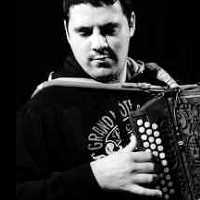
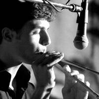

|
Davide Mereu
Nasce nel 1981, cresce a Sorgono (NU), un piccolo paese del centro Sardegna. Inizia il suo percorso musicale a 7 anni prendendo lezioni private di chitarra classica e teoria musicale, strada che percorrerà fino ai 19 anni, conseguendo nel mentre il diploma di solfeggio al conservatorio L.Canepa di Sassari. Nello stesso periodo suona anche nelle band locali, esplorando il mondo del Rock-Blues con la chitarra elettrica.
Da sempre immerso nel mondo del folklore grazie al padre Gianni, direttore artistico del Gruppo Folk "Sorgono" e cultore di tradizioni popolari, a 14 anni si avvicina da autodidatta allo studio dell'organetto diatonico, imitando i suonatori che frequentavano le feste del paese. Dall'anziano suonatore del paese Giuseppe Brundu, noto Brungiuleddu, impara le musiche che hanno animato le feste del paese e di tutta la zona, rimanendo tra i pochissimi depositari di quell'antico suono, che poi inciderà in un CD.
Svariati i festival nazionali e internazionali a cui partecipa, in Italia e in Europa, accompagnando gruppi di ballerini o musicisti.
A 23 anni con il padre Gianni e la sorella Cristina fonda "Lobas - Laboratorio di Musica, Cultura e Tradizioni
Popolari" (www.lobas.it), progetto culturale che gli permette di partecipare ai più importanti festival internazionali di musica e danze popolari, nonché sperimentare nuove tecniche di esecuzione per l'organetto, sia da solista che in duo con il suonatore di Launeddas Andrea Pisu.
Attualmente oltre al personale percorso di ricerca sulle musiche popolari della Sardegna studia le tecniche dei grandi organettisti europei, affiancando al repertorio sardo un concerto da ballo con un brani da "bal-folk" (francese, occitano, paesi baschi, ...) in gruppo con altri musicisti, tra cui Alberto Ceria e Andrea Capezzuoli.
Massimo Congiu
Nato a Cagliari nel 1985 cresce a Quartu S.E. dove, all'età di 12 anni rimane incantato davanti ad un suo coetaneo che suonava uno strumento fatto di tre semplici canne: le Launeddas.
Comincia qui il suo cammino nel mondo di questo strumento, prendendo costantemente lezioni dal maestro Carlo Mariani e immergendosi nei vinili e nei vecchi nastri, inizia ad avere modo di proporsi in veste di solista nelle numerose occasioni tradizionali Isolane proponendo le note suonate per Launeddas di scuola Burranca.
Partecipa al festival jazz di Sant'Anna Arresi con l'orchestra "Le Lunghe Canne" nelle edizioni del 1999, 2000, 2003, avendo l'occasione unica di suonare con grandi artisti come Trilok Gurtu, Marc Ribot e Pat Metheny.
Alterna il suo percorso tradizionale con puntuali sperimentazioni come il progetto "Isola Song" dei fratelli Melis, contaminando vari stili musicali, come il rock, la musica classica, quella etnica, la d.j. music.
Partecipa inoltre a numerosi festival della musica etnica in diverse occasioni europee.
Dal gennaio 2002 collabora con Emanuele Garau, proponendo le più note suonate per launeddas nei suoi svariati spettacoli.
|